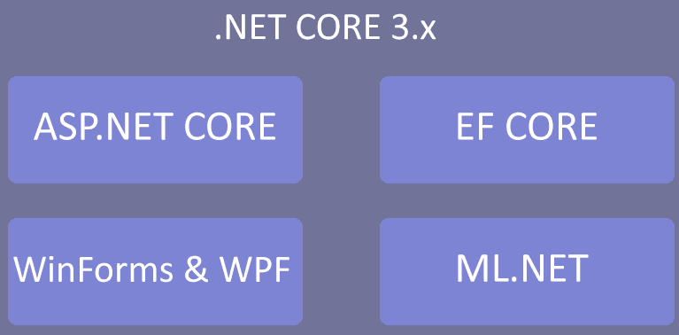
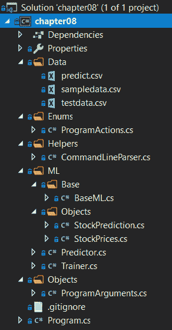

既然我们已经深入研究了 ML.NET 提供的各种算法，我们将在接下来的几章中开始探索如何将 ML.NET 集成到生产应用程序中。在这一章中，我们将深入探讨建立在前几章中定义的结构上的. NET 核心控制台应用程序，重点是强化和错误处理。我们将构建的应用程序使用预测来根据一系列趋势预测股票价格。在本章结束时，你应该已经牢牢掌握了设计和编写产品级的代码。NET 核心应用程序与 ML.NET。
在本章中，我们将讨论以下主题:
如第一章、【机器学习入门】和【ML.NET】、所述。由于在 3.0 版本中进行了优化，NET Core 3.x 是使用 ML.NET 的首选平台。此外，。NET Core 提供了一个针对 Linux、macOS 和 Windows 的单一编码框架，如下图所示:

自 2016 年成立以来，的基本目标是。NET Core 一直在提供快速更新和与微软(以前只有 Windows)对等的功能。NET 框架。随着时间和版本的推移，通过简单地添加缺失的 API，使用额外的 NuGet 包，差距已经变小。一个这样的例子是Microsoft.Windows.Compatibility，它提供了 20，000 个核心框架中没有的 API，包括注册表访问、绘图和 Windows 权限模型访问。这种方法保持了框架的轻量级和跨平台性，但是引入了一些设计模式来帮助您开发特定于平台的应用程序。
举个例子，一个 Windows 桌面应用程序使用 ML.NET 来提供一个入侵检测系统 ( IDS )。一个简单的方法是在一个. NET CoreWindows Presentation Foundation(WPF)应用程序中编写所有代码。然而，这只会把你束缚在 Windows 上，而不会进行大的重构。更好的方法是创建一个包含所有平台无关代码的. NET 核心类库，然后创建抽象类或接口来实现平台应用程序中特定于平台的代码。
如前所述。NET Core 提供了一个针对 Windows、macOS 和 Linux 的单一框架。然而，这不仅仅适用于我们在本书中使用的控制台应用程序。最近的工作。NET Core 3 提供了移植现有内容的能力。NET 框架 WPF 和 Windows 窗体应用程序。NET Core 3，从而使依赖于可能已经过时的框架的应用程序能够使用最新的。净核心进展。此外，以前使用 ASP.NET 的 web 应用程序可以迁移到 ASP.NET 核心(ASP.NET web forms 目前没有迁移路径)。
的另一个好处。NET Core 目标是使用--self-contained标志进行编译的能力。这个标志编译您的应用程序或库，然后捆绑所有必要的。NET 核心框架文件。这使您可以在安装过程中部署应用程序，而无需具备. NET 先决条件。这确实会使您的总体构建输出更大，但是在客户场景中，大约 100MB 的增加远远超过了先决条件的部署障碍。
你可能想知道未来。NET 框架、Mono 和。网芯是。幸运的是，在撰写本文时，微软已经确认所有现有的框架都将被移植到一个名为。净 5。以前，在决定使用哪种框架时，一定要权衡利弊。因此，利用每个框架的优点并第一次将它们统一起来将完全消除这些权衡。举个例子，Mono 的超前 ( AOT )编译或者 Xamarin 的跨平台 UI 支持，它们可以在现有的。NET Core 3.x 应用基于发布的信息。
的预览。NET 5 预计在 2020 年上半年发布，2020 年 11 月量产发布。
如前所述，我们将创建的应用程序是一个股票价格估计器。给定一组几天、几周或几年的股票价格，预测算法将在内部识别趋势模式。与前几章不同，该应用程序将被设计为插入到生产管道中。
与前面的章节一样，完整的项目代码、样本数据集和项目文件可以从:https://github . com/packt publishing/Hands-On-Machine-Learning-With-ML 下载。网/树/主/第 08 章。
基于我们在前几章中创建的项目体系结构和代码，我们将在本章中探索的体系结构进一步增强了体系结构的结构化，从而对最终用户更有用。
与前面的一些章节一样，需要一个额外的 NuGet 包—Microsoft.ML.TimeSeries—来利用 ML.NET 中的预测功能。1.3.1 版在 GitHub 上的示例和本章的深入探讨中都有使用。
在下面的屏幕截图中，您将找到该项目的 Visual Studio 解决方案资源管理器视图。该解决方案新增了几项功能，以促进我们的目标生产用例。我们将在本章后面详细查看解决方案屏幕截图中显示的每个新文件:

sampledata.csv文件包含 24 行股票价格。请随意调整数据以适应您自己的观察或调整训练好的模型。以下是数据片段:
33
34
301
33
44
299
40
50
400
60
76
500
这些行中的每一行都包含我们将填充到一个StockPrices类对象中的股票价格值，我们将在本章的后面回顾这个类对象。
除此之外，我们添加了包含额外数据点的testdata.csv文件，以测试新训练的模型并对其进行评估。下面是testdata.csv中的一段数据:
10
25
444
9
11
333
4
3
500
对于这个应用程序，如前一节所述，我们是在前面章节完成的工作的基础上构建的。但是，对于本章，我们将更改每个文件以支持生产使用情形。对于与前面章节不同的每个文件，我们将回顾所做的更改以及这些更改背后的原因。
更改或添加的类和枚举如下:
以下ProgramActions枚举已添加到解决方案中，以便于使用强类型和结构化路径来处理程序执行的各种操作:
namespace chapter08.Enums
{
public enum ProgramActions
{
TRAINING,
PREDICT
}
}
在这个应用程序中，我们只有两个动作— Training和Predicting。然而，如前几章所示，您可能还需要一个特征提取步骤，或者提供一个评估步骤。这种设计模式提供了灵活性，同时也消除了本章开始时提到的魔术串问题。
CommandLineParser类提供了一个与程序无关的解析器来处理命令行参数。在前面的章节中，我们手动解析索引并将这些值映射到参数。另一方面，这种方法创建了一个灵活、易于维护的结构化响应对象，将参数直接映射到属性。现在让我们深入课堂:
public static T ParseArguments<T>(string[] args)
泛型的使用(即T)创造了一种灵活的方法，使这个方法不受这个应用程序的限制。
if (args == null)
{
throw new ArgumentNullException(nameof(args));
}
if (args.Length == 0)
{
Console.WriteLine("No arguments passed in - using defaults");
return Activator.CreateInstance<T>();
}
if (args.Length % 2 != 0)
{
throw new ArgumentException($"Arguments must be in pairs, there were {args.Length} passed in");
}
var argumentObject = Activator.CreateInstance<T>();
确保在创建类对象时，构造函数没有参数，否则该调用将引发异常。如果创建一个带有构造函数参数而没有无参数构造函数的对象，使用重载Activator.CreateInstance并传入所需的参数。
var properties = argumentObject.GetType().GetProperties();
for (var x = 0; x < args.Length; x += 2)
{
var property = properties.FirstOrDefault(a => a.Name.Equals(args[x], StringComparison.CurrentCultureIgnoreCase));
if (property == null)
{
Console.WriteLine($"{args[x]} is an invalid argument");
continue;
}
if (property.PropertyType.IsEnum)
{
property.SetValue(argumentObject, Enum.Parse(property.PropertyType, args[x + 1], true));
}
else
{
property.SetValue(argumentObject, args[x + 1]);
}
}
请注意IsEnum函数处理我们之前提到的ProgramActions枚举的特殊情况。由于字符串值不能自动转换成枚举，我们需要专门用Enum.Parse方法处理字符串到枚举的转换。如前所述，如果向T类型添加更多枚举，枚举处理程序是通用的。
这个应用程序的BaseML类已经简化为简单地实例化MLContext对象:
using Microsoft.ML;
namespace chapter08.ML.Base
{
public class BaseML
{
protected readonly MLContext MlContext;
protected BaseML()
{
MlContext = new MLContext(2020);
}
}
}
StockPrediction类是我们预测值的容器，定义如下:
namespace chapter08.ML.Objects
{
public class StockPrediction
{
public float[] StockForecast { get; set; }
public float[] LowerBound { get; set; }
public float[] UpperBound { get; set; }
}
}
StockForecast属性将保存我们基于模型训练预测的股票价值和提交给预测引擎的价值。LowerBound和UpperBound值分别保存最低和最高估计值。
StockPrices类包含我们保存股票价格的单个浮点值。为了在填充值时保持代码的整洁，添加了一个接受股票价格值的构造函数:
using Microsoft.ML.Data;
namespace chapter08.ML.Objects
{
public class StockPrices
{
[LoadColumn(0)]
public float StockPrice;
public StockPrices(float stockPrice)
{
StockPrice = stockPrice;
}
}
}
与前几章相比，Predictor类已经过简化和调整，以支持预测:
public void Predict(ProgramArguments arguments)
if (!File.Exists(arguments.ModelFileName))
{
Console.WriteLine($"Failed to find model at {arguments.ModelFileName}");
return;
}
if (!File.Exists(arguments.PredictionFileName))
{
Console.WriteLine($"Failed to find input data at {arguments.PredictionFileName}");
return;
}
using (var stream = new FileStream(Path.Combine(AppContext.BaseDirectory, arguments.ModelFileName), FileMode.Open, FileAccess.Read, FileShare.Read))
{
mlModel = MlContext.Model.Load(stream, out _);
}
var predictionEngine = mlModel.CreateTimeSeriesEngine<StockPrices, StockPrediction>(MlContext);
var stockPrices = File.ReadAllLines(arguments.PredictionFileName);
foreach (var stockPrice in stockPrices)
{
var prediction = predictionEngine.Predict(new StockPrices(Convert.ToSingle(stockPrice)));
Console.WriteLine($"Given a stock price of ${stockPrice}, the next 5 values are predicted to be: " +
$"{string.Join(", ", prediction.StockForecast.Select(a => $"${Math.Round(a)}"))}");
}
类似于Predictor类的Trainer类接受了精简和修改，以考虑 ML.NET 预测算法:
public void Train(ProgramArguments arguments)
if (!File.Exists(arguments.TrainingFileName))
{
Console.WriteLine($"Failed to find training data file ({arguments.TrainingFileName})");
return;
}
if (!File.Exists(arguments.TestingFileName))
{
Console.WriteLine($"Failed to find test data file ({arguments.TestingFileName})");
return;
}
var dataView = MlContext.Data.LoadFromTextFile<StockPrices>(arguments.TrainingFileName);
var model = MlContext.Forecasting.ForecastBySsa(
outputColumnName: nameof(StockPrediction.StockForecast),
inputColumnName: nameof(StockPrices.StockPrice),
windowSize: 7,
seriesLength: 30,
trainSize: 24,
horizon: 5,
confidenceLevel: 0.95f,
confidenceLowerBoundColumn: nameof(StockPrediction.LowerBound),
confidenceUpperBoundColumn: nameof(StockPrediction.UpperBound));
输入和输出列名引用与我们在前面章节中看到的一样。windowSize属性是训练集中数据点之间的持续时间。对于这个应用程序，我们使用7来表示一周的持续时间。在这种情况下，seriesLength 属性表示数据集的总持续时间。horizon属性指示当模型运行时应该计算多少预测值。在我们的例子中，我们要求5预测值。
var transformer = model.Fit(dataView);
var forecastEngine = transformer.CreateTimeSeriesEngine<StockPrices, StockPrediction>(MlContext);
forecastEngine.CheckPoint(MlContext, arguments.ModelFileName);
Console.WriteLine($"Wrote model to {arguments.ModelFileName}");
如本节前面所述，这个新类提供了整个应用程序中使用的参数到属性的一对一映射:
public ProgramActions Action { get; set; }
public string TrainingFileName { get; set; }
public string TestingFileName { get; set; }
public string PredictionFileName { get; set; }
public string ModelFileName { get; set; }public ProgramArguments()
{
ModelFileName = "chapter8.mdl";
PredictionFileName = @"..\..\..\Data\predict.csv";
TrainingFileName = @"..\..\..\Data\sampledata.csv";
TestingFileName = @"..\..\..\Data\testdata.csv";
}
与前几章不同，如果有任何属性没有按预期设置，程序就会失败。这对开发人员的体验来说很好；然而，在现实世界中，最终用户更有可能尝试不带任何参数运行应用程序。
在Program类中，代码已经被简化以利用本章前面讨论的新的CommandLineParser类。通过使用CommandLineParser类，所有的动作都被切换到利用强类型枚举:
Console.Clear();
var arguments = CommandLineParser.ParseArguments<ProgramArguments>(args);
switch (arguments.Action)
{
case ProgramActions.PREDICT:
new Predictor().Predict(arguments);
break;
case ProgramActions.TRAINING:
new Trainer().Train(arguments);
break;
default:
Console.WriteLine($"Unhandled action {arguments.Action}");
break;
}
要运行该应用程序，流程与第 3 章、回归模型中的示例应用程序几乎相同，只是在训练时传递测试数据集:
PS chapter08\bin\Debug\netcoreapp3.0> .\chapter08.exe
No arguments passed in - using defaults
Wrote model to chapter8.mdl
PS chapter08\bin\Debug\netcoreapp3.0> .\chapter08.exe action predict
Given a stock price of $101, the next 5 values are predicted to be: $128, $925, $140, $145, $1057
Given a stock price of $102, the next 5 values are predicted to be: $924, $138, $136, $1057, $158
Given a stock price of $300, the next 5 values are predicted to be: $136, $134, $852, $156, $150
Given a stock price of $40, the next 5 values are predicted to be: $133, $795, $122, $149, $864
Given a stock price of $30, the next 5 values are predicted to be: $767, $111, $114, $837, $122
Given a stock price of $400, the next 5 values are predicted to be: $105, $102, $676, $116, $108
Given a stock price of $55, the next 5 values are predicted to be: $97, $594, $91, $103, $645
Given a stock price of $69, the next 5 values are predicted to be: $557, $81, $87, $605, $90
Given a stock price of $430, the next 5 values are predicted to be: $76, $78, $515, $84, $85
您可以随意修改这些值，并查看预测如何基于模型所基于的数据集而发生变化。从这一点来看，一些实验领域可能要做以下事情:
现在我们已经完成了我们的深入研究，有几个额外的元素可以进一步增强应用程序。这里讨论几个想法。
随着应用程序复杂性的增加，强烈推荐使用 NLog(https://nlog-project.org/)或类似的开源项目进行日志记录。这将允许您以不同的级别登录到文件、控制台或第三方日志解决方案，如 Loggly。例如，如果您将此应用程序部署给客户，那么在远程调试问题时，将错误级别分解为至少调试、警告和错误将会很有帮助。
正如本节前面提到的，为了创造灵活性和适应性，我们利用了Reflection来解析命令行参数。你可以更进一步，用一种完全基于反射的方法替换Program类中的 switch case 语句/标准流，这意味着对于应用程序中定义的每个动作，它都可以从一个抽象的BaseAction类继承，并且在运行时，根据参数调用适当的类。对于每一个新动作，只需向ProgramActions枚举添加一个新条目，然后用该枚举定义一个类就可以了。
在现实世界中，用于运行预测的数据很可能来自数据库。这个数据库，无论是 Postgres，SQL Server，还是 SQLite 数据库(仅举几个例子)，都可以用微软的 Entity Framework Core 或者 ML 来访问。NET 内置的数据库加载器方法— CreateDatabaseLoader。这个加载器类似于我们从可枚举或文本文件中加载数据的方式，只不过多了注入 SQL 查询的步骤。
在生产场景中，给定实体框架核心的性能和在 ML 上使用 LINQ 而不是明文的能力。NET 的实现(在撰写本文时)，如果使用数据库资源，我建议使用实体框架。
在这一章中，我们深入探讨了生产就绪的内容。NET 核心应用程序体系结构，以前面章节所做的工作为基础。我们还使用 ML.NET 的预测算法创建了一个全新的股票价格估计器。最后，我们讨论了进一步增强. NET 核心应用程序(以及一般的生产应用程序)的一些方法。
在下一章，我们将深入使用 ML 创建一个生产文件分类 web 应用程序。NET 的二进制分类和 ASP.NET 核心框架。